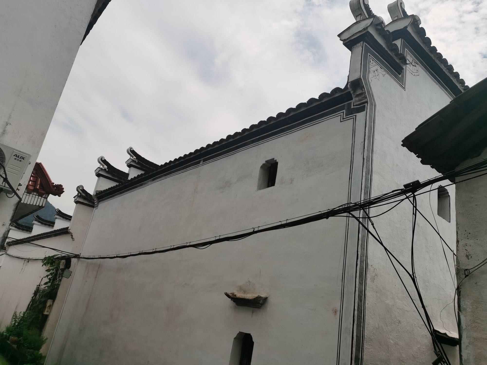
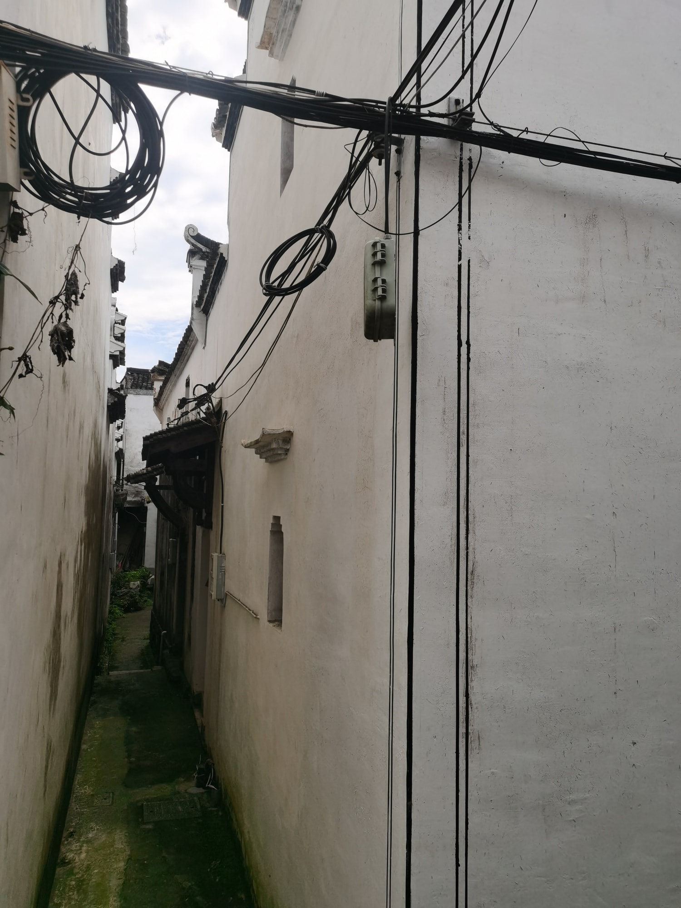
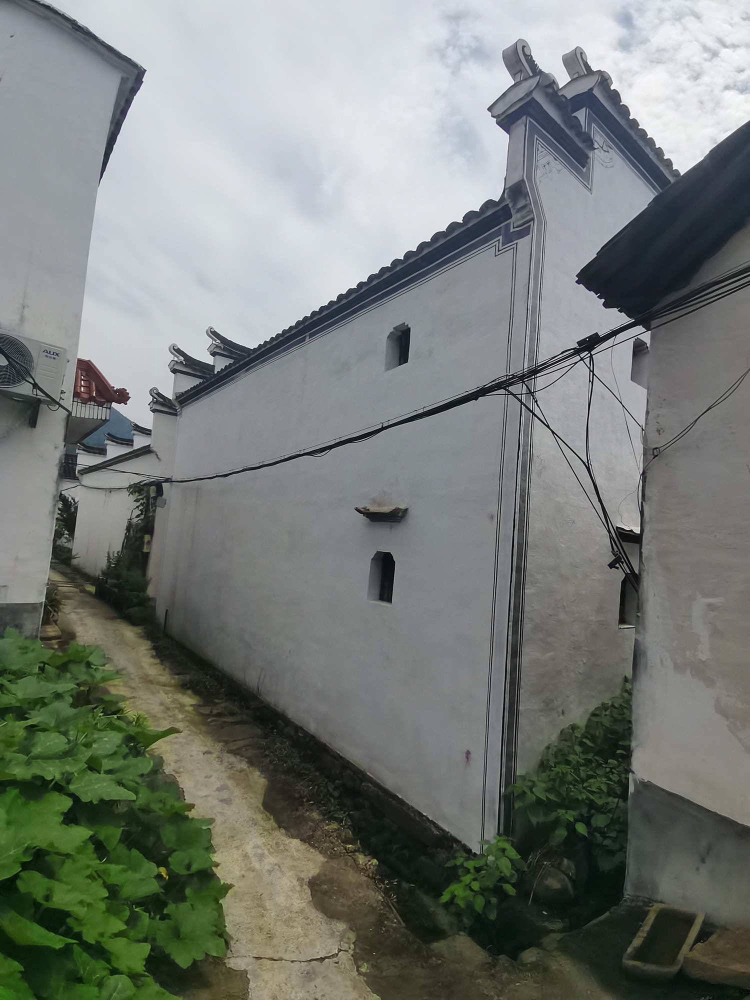

省保传统民居
由院落进入建筑层次叶柏林民居
叶柏林民居是省级文物保护单位“新叶村乡土建筑”的组成部分。由院落走近立面，空间从围合关系逐渐转向墙面、屋檐与光影细节。
01
院落中的空间转折

从街巷进入院落，空间由外部通行转为较为安静的内部尺度。墙面围合着一方停驻之处，也让行走节奏随之放缓。
02
近观建筑立面

靠近立面时，视线由院落转向墙面和屋檐形成的轮廓。明暗、材质与尺度在近处更加清楚，补充了院落整体带来的空间感受。

叶柏林民居是省级文物保护单位“新叶村乡土建筑”的组成部分。由院落走近立面，空间从围合关系逐渐转向墙面、屋檐与光影细节。

从街巷进入院落，空间由外部通行转为较为安静的内部尺度。墙面围合着一方停驻之处，也让行走节奏随之放缓。

靠近立面时，视线由院落转向墙面和屋檐形成的轮廓。明暗、材质与尺度在近处更加清楚，补充了院落整体带来的空间感受。